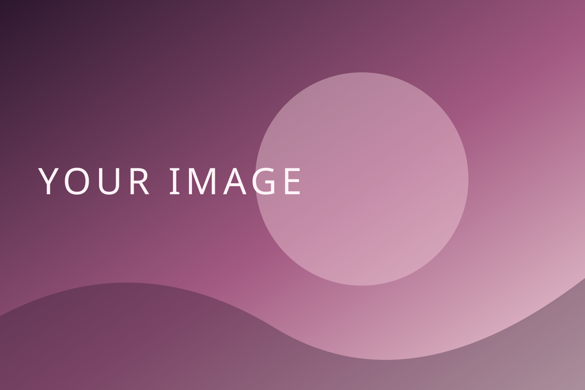

const seed = ocean.memory();
await boot(seed); // neural matrix online
const clock = sync('neural');
clock.rate = 0.87;
const photons = collect('cyan');
photons.spread(0.22);
await light.scan('hair');
light.edge = 0.85;
const link = connect('deep-space');
await link.listen();
const face = await decode('recursive');
face.resolve();
const portrait = reveal('original-frame');
portrait.resolve();
SYNC RATIO00.00%
INITIALIZING
从这里，开始你的下一次创作。
RESONANCE / DOUBAO00:00:00
欢迎回来
DOUBAO INITIALIZE / TYPE-0
> MAGI SYSTEM · CASPER / MELCHIOR / BALTHASAR
> loading renderer surface ........ ok
> entry plug depth 21.6 ........... ok
> LCL pressure nominal